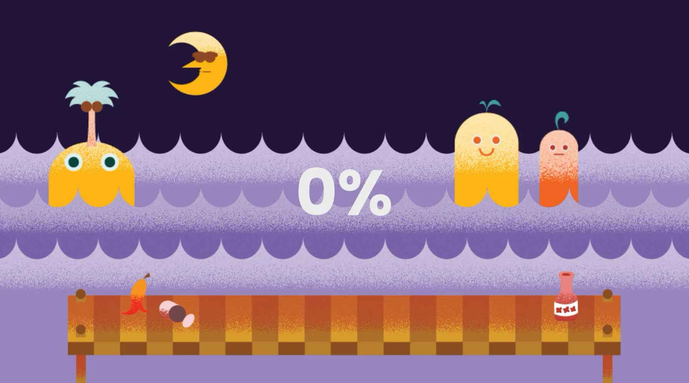

In dit project combineer ik een speelse UI met een geanimeerd karakter dat de gebruiker met eenvoudige knoppen kan besturen. De illustratiestijl is door mij gemaakt, geïnspireerd op cartoons uit de jaren ’50. Hoewel Adobe XD beperkte compatibiliteit bood, was het een waardevolle oefening in de basisprincipes van After Effects.
Afbeeldingen
